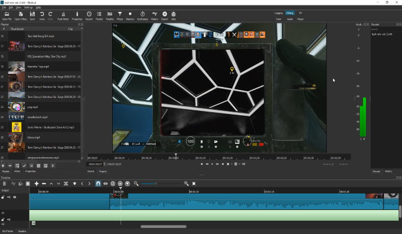
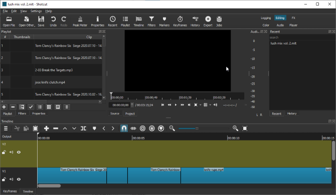

How I Edit My Videos
I record my Edit using Shotcut, an open source video editing software. I mainly used it cause it was free, but it also had some nice features like
- The UI is not too complicated
- It accepts tons of video formats so it is easy to start editing
- You can edit audio and video together and play it back to test
That's mainly it, it was free and easy to download to start using.
The only issues I've had is files corrupting while moving them onto a new disk drive, which may not be the editor's issue.
If you are interested in checking out more about it, you can find it on it's website .
|  |  |